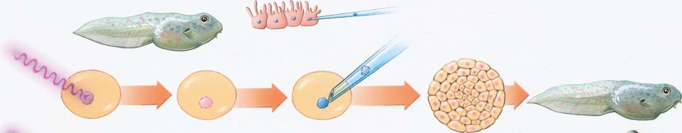
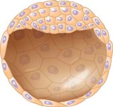
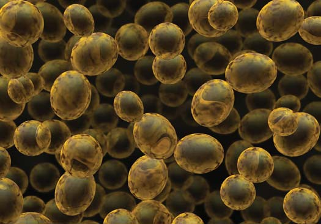

17 Genética del desarrollo
369
CONCEPTOS CLAVE
17.1 La expresión génica diferencial controla el desarrollo de tejidos especializados y órganos. 17.2 Muchos genes que regulan el desarrollo son bastante similares en un amplio rango de organismos, desde las moscas de la fruta hasta los seres humanos. Las mutaciones en los genes que regulan el desarrollo han proporcionado claves de cómo funcionan estos genes. 17.3 Las mutaciones en oncogenes y genes supresores de tumor pueden conducir al cáncer.
L
a genética del desarrollo es el estudio de los genes implicados en la diferenciación celular y en el desarrollo de un organismo. Hasta fi nes de la década de 1970, los biólogos sabían poco sobre cómo interactúan los genes para controlar el desarrollo. Desenredar las interacciones genéticas que tienen lugar durante el desarrollo era un problema intratable con los métodos tradicionales. Sin embargo, el rápido progreso en la investigación con ADN recombinante condujo a los científi cos a buscar mutantes en el desarrollo y a aplicar técnicas sofi sticadas para estudiarlos. (Un mutante es un individuo con un fenotipo anormal causado por una mutación génica). El organismo de la fotografía es un embrión en desarrollo de la mosca de la fruta Drosophila melanogaster . Los genetistas usaron la técnica de inmunofl uorescencia , en la que un colorante fl uorescente unido a un anticuerpo, se adhiere a una proteína específi ca, por tanto sirve para localizar proteínas. En este caso los investigadores unieron tres anticuerpos fl uorescentes diferentes, uno rojo, uno azul, y uno amarillo, con tres proteínas específi cas. Los patrones de bandas de colores indican que las diferentes células del embrión presentan una expresión génica diferencial , es decir, genes distintos activos a la vez. El trabajo con Drosophila y otros organismos tiene profundas implicaciones para la comprensión tanto del desarrollo humano normal (incluyendo el envejecimiento) como de las disfunciones que conducen a defectos congénitos y a cáncer. Las sorprendentes similitudes entre los genes que controlan el desarrollo en una amplia variedad de especies muy diferentes sugieren que los mecanismos genéticos importantes para el desarrollo están profundamente arraigados en la historia evolutiva de los organismos multicelulares. Existen también diferencias en los patrones de desarrollo de las especies que refl ejan sus caminos evolutivos separados.
Expresión génica diferencial en el organismo modelo Drosophila melanogaster .
Stephen W. Paddock
370 Capítulo 17
tructuras y funciones muy diferentes de las de varios tipos de células localizadas en las hojas. También se encuentra diversidad a nivel molecular; más extraordinariamente, cada tipo de célula de una planta o de un animal produce un conjunto de proteínas muy específi co. En algunos casos, como el de la proteína hemoglobina en los eritrocitos, una proteína específi ca de una célula puede llegar a representar hasta más del 90% de la masa proteínica total de la célula. Otras células pueden presentar un complemento de proteínas de células específi cas, cada una de las cuales está presente en pequeñas cantidades pero igualmente tienen una función esencial. Sin embargo, como ciertas proteínas se requieren en todos los tipos de células (todas las células, por ejemplo, necesitan las mismas enzimas para la glucólisis), las proteínas de células específi cas normalmente sólo constituyen una fracción del número total de diferentes clases de proteínas. Cuando los investigadores descubrieron por primera vez que cada tipo de célula diferenciada produce un conjunto único de proteínas, algunos científi cos plantearon la hipótesis de que cada grupo de células pierde los genes que no necesita y retiene sólo los que necesita. Sin embargo, por lo general esto no parece ser cierto. De acuerdo con el principio de la equivalencia nuclear , los núcleos de esencialmente todas las células adultas diferenciadas de un individuo son desde el punto de vista genético (aunque no por necesidad metabólicamente) idénticas entre sí y respecto al núcleo del cigoto del que descienden. Esto signifi ca que prácticamente todas las células somáticas en un adulto tienen los mismos genes. Sin embargo, células diferentes expresan distintos subconjuntos de estos genes. Las células somáticas son todas las células del cuerpo excepto las células de la línea germinal , que contienen el material genético que transmitirán a la próxima generación. En los animales, las células de la línea germinal, cuyas hijas fi nalmente sufren meiosis y se diferencian en gametos, por lo general son separadas pronto en el desarrollo. En las plantas, la diferenciación entre las células somáticas y las células de la línea germinal no es tan clara, y la determinación de que ciertas células sufran meiosis se realiza mucho después en el desarrollo. La evidencia de la equivalencia nuclear proviene de casos en los que se ha encontrado que células diferenciadas o sus núcleos retienen el potencial de dirigir el desarrollo del organismo entero. Estas células o núcleos se dice que manifi estan totipotencia .
La mayoría de las diferencias celulares se deben a una expresión génica diferencial
Ya que no parece que los genes se pierdan de forma regular durante el desarrollo (y por lo tanto la equivalencia nuclear está presente en distintos tipos celulares), las diferencias en la composición molecular de las células debe estar regulada por las actividades de diferentes genes. Con frecuencia se hace referencia al proceso de regulación génica del desarrollo como expresión génica diferencial . Como se analizó en el capítulo 14, la expresión de los genes eucariotas está regulada de muchos modos y en varios niveles. Por ejemplo, una enzima particular puede producirse en una forma inactiva y activarse posteriormente. Sin embargo, gran parte de la regulación importante para el desarrollo se produce a nivel transcripcional. La transcripción de ciertos conjuntos de genes se reprime, mientras que la de otros conjuntos se activa. Incluso la expresión de los genes que son constitutivos, es decir, que se transcriben constantemente, se regula durante el desarrollo de manera que la cantidad de cada producto varía de un tejido a otro.
Como se verá en el capítulo 18, los genes del desarrollo han jugado un papel fundamental en la diversidad de formas de los organismos durante el curso de su evolución. Los biólogos ahora están estudiando cómo se activan, desactivan y modifi can los genes para controlar el desarrollo. Los científi cos esperan comprender fi nalmente cómo en una única célula, el óvulo fecundado, genera en su interior un organismo multicelular tan complejo como un ser humano.
17.1 DIFERENCIACIÓN CELULAR Y EQUIVALENCIA NUCLEAR
OBJETIVOS DE APRENDIZAJE
1 Distinguir entre determinación celular y diferenciación celular, y entre equivalencia nuclear y totipotencia. 2 Describir los experimentos clásicos de Steward, Gurdon y Wilmut. 3 Defi nir células madre , distinguir entre células madre embrionarias y células madre pluripotentes, y describir algunas de las prometedoras áreas de investigación que implican el uso de células madre.
El estudio del desarrollo , defi nido de un modo amplio como todos los cambios que ocurren en la vida de un individuo, abarca algunos de los problemas más fascinantes y difíciles de la biología de hoy en día. De particular interés es el proceso por el que las células se especializan y se organizan en un organismo complejo. Durante las muchas divisiones celulares necesarias para que una única célula se convierta en un organismo multicelular, grupos de células se comprometen gradualmente en patrones específi cos de actividad génica a través del proceso de determinación celular . Conforme se produce la determinación celular, las vías de desarrollo de las células embrionarias se restringen de manera que su destino se limita cada vez más y más. El paso fi nal que lleva a la especialización celular es la diferenciación celular . Una célula diferenciada, que tiene una apariencia y actividades características, está irreversiblemente comprometida con su destino. Otra parte intrigante del rompecabezas del desarrollo es la formación del cuerpo. En la morfogénesis , o proceso para adquirir la forma, determinadas células en localizaciones específi cas se diferencian y se organizan espacialmente en estructuras reconocibles. La morfogénesis tiene lugar a través del proceso de múltiples etapas de formación de patrones , u organización de las células en estructuras tridimensionales. La formación de patrones incluye señalización entre las células, cambios en la forma de las células, y migraciones celulares. Dependiendo de su localización, las células están expuestas a diferentes concentraciones de moléculas señalizadoras que especifi can la información de la situación. Así, dónde se localiza una célula determina a menudo en lo que se convertirá cuando madure. El cuerpo humano, como el de otros vertebrados, contiene unos 250 tipos de células diferentes reconocibles ( FIGURA 17-1 ). Las combinaciones de estas células especializadas, conocidas como células diferenciadas , se organizan en estructuras diversas y complejas, como el ojo, la mano, y el cerebro, donde cada una es capaz de realizar muchas actividades sofi sticadas. Lo más importante de todo es el hecho de que todas las estructuras del cuerpo y las células diferenciadas dentro de ellas provienen de un cigoto unicelular, un óvulo fecundado. Todos los organismos multicelulares experimentan complejos patrones de desarrollo. Las raíces de las plantas, por ejemplo, tienen es-
Genética del desarrollo 371
Conforme se determina el desarrollo de una célula a lo largo de una ruta de diferenciación, su apariencia física puede o no cambiar de manera signifi cativa. En cualquier caso, cuando se completa una etapa de determinación, los cambios en la célula se vuelven normalmente autoperpetuadores y no es fácil que se reviertan. La diferenciación celular normalmente es la última etapa en el proceso de desarrollo. En este punto, una célula precursora se vuelve estructural y funcionalmente reconocible como una célula ósea, por ejemplo, y su patrón de actividad génica difi ere del de una célula nerviosa, o de cualquier otro tipo celular.
Se puede pensar en la diferenciación como una serie de rutas que conducen desde una célula individual (cigoto) hasta las células de los diferentes tejidos especializados, organizadas en un patrón apropiado. En el momento en que una célula se compromete genéticamente con una trayectoria del desarrollo, sus células hijas la seguirán. Estos compromisos restringen en forma gradual el desarrollo de las células descendientes a un grupo limitado de tipos de tejidos fi nales. La determinación celular, entonces, es una fi jación progresiva del destino y funciones de los descendientes de una célula.
Conforme avanza el desarrollo, las células somáticas que antes tenían el potencial de convertirse en diversas células, progresivamente evidencian un mayor compromiso con una función o destino específi co.
Glándula suprarrenal (médula)
Célula epitelial
Eritrocito
Gónada
Célula pigmentada
Célula de la retina
Células de la piel
Ectodermo
Hígado
Célula exocrina
Pulmones
Línea germinal
Endodermo
Óvulo fecundado
División celular y diferenciación celular
Músculos esqueléticos
Riñón
Músculo intestinal
Corazón, vasos sanguíneos
Glándulas
Epidermis Mesodermo
Sangre
Células endoteliales
Glándula suprarrenal (corteza)
Células del músculo liso
Célula tubular Célula muscular estriada
Células del cartílago
Huesos y tejido conjuntivo
Revestimiento de la vejiga urinaria
Células de la tráquea
Glándula tiroides
Recubrimiento de la faringe
Células productoras de gametos
Neurona
Sistema nervioso Célula de la glándula mamaria
Páncreas
Células somáticas
FIGURA 17-1 Linajes celulares en los vertebrados Repetidas divisiones del óvulo fecundado ( parte inferior ) dan como resultado el establecimiento de tejidos que contienen grupos de células especializadas. Las células de la línea germinal (células que producen los gametos)
se forman en las etapas iniciales del desarrollo. Las células somáticas se forman a lo largo de diversas rutas de desarrollo, experimentando una serie de cambios que determinan progresivamente sus funciones y destino.
PUNTO CLAVE

372 Capítulo 17
Puesto que los éxitos conseguidos en ranas no se podían reproducir con embriones de mamíferos, durante muchos años, numerosos biólogos del desarrollo concluyeron que alguna característica fundamental de la biología de la reproducción mamífera podría representar una barrera impenetrable para la clonación de mamíferos. Esta percepción cambió marcadamente en 1996 y 1997 con los primeros informes del nacimiento de mamíferos clonados.
Un núcleo totipotente contiene todas las instrucciones para el desarrollo
En las plantas, algunas células diferenciadas pueden inducirse para que se conviertan en el equivalente a las células embrionarias. Los biólogos utilizan técnicas de cultivo celular para aislar células individuales de ciertas plantas y permitirles que crezcan en un medio nutritivo. En la década de 1950, F. C. Steward y sus colaboradores en la Universidad Cornell realizaron algunos de los primeros experimentos para investigar la totipotencia celular en las plantas ( FIGURA 17-2 ). Las células totipotentes tienen el potencial de dar lugar a todas las partes de un organismo ya que tienen un conjunto completo de las instrucciones genéticas necesarias para dirigir el desarrollo normal de un organismo completo. Steward y sus colaboradores provocaron la división de células de la raíz de una zanahoria en un medio líquido nutritivo, formando grupos de células llamadas cuerpos embrioides (parecidos a embriones). Estos grupos de división de células se transfi rieron entonces a un medio con agar, que proporcionó nutrientes y una estructura de soporte sólida para las células de la planta en crecimiento. Algunas de las células de los cuerpos embrioides dieron lugar a raíces, tallos y hojas. Las pequeñas plantas resultantes, llamadas, plantuloides para diferenciarlas de las verdaderas plántulas, se trasplantaron al suelo, donde fi nalmente se trasformaron en plantas adultas capaces de producir fl ores y semillas viables. Ya que estas plantas se derivan todas de la misma planta progenitora, son genéticamente iguales y por lo tanto constituyen un clon. Como se menciona en el capítulo 15, un clon consiste en organismos individuales, células, o moléculas de ADN que son genéticamente idénticas a otro individuo, célula, o molécula de ADN, de la que se derivaron. Los métodos de cultivos de tejidos de plantas ahora se utilizan ampliamente para producir plantas modifi cadas con ingeniería genética ya que éstas permiten a los investigadores regenerar plantas completas a partir de células individuales que han incorporado moléculas de ADN recombinante (vea el capítulo 38). En la década de 1950, los investigadores comenzaron a probar si los pasos en el proceso de determinación celular son reversibles en las células animales al trasplantar el núcleo de una célula en una etapa relativamente tardía del desarrollo en un óvulo (célula huevo) que había sido enucleada (es decir, su propio núcleo había sido destruido). Robert Briggs y Th omas J. King del Institute of Cancer Research en Pennsylvania fueron los pioneros en los experimentos de trasplante de núcleos . Trasplantaron núcleos de células de rana que se encontraban en diferentes estados de desarrollo en óvulos cuyos núcleos se habían eliminado. Algunos de los trasplantes procedieron de forma normal durante varios estadios del desarrollo, y unos pocos incluso se trasformaron en renacuajos normales. Como regla, los núcleos trasplantados a partir de células en estadios más tempranos soportaban con mayor probabilidad el desarrollo hasta el estadio renacuajo. Conforme el destino de las células estaba más determinado, la probabilidad de que el núcleo trasplantado pudiera controlar el desarrollo normal disminuía rápidamente. El biólogo británico John B. Gurdon realizó experimentos de trasplante nuclear en ranas durante la década de 1960. En unos pocos casos demostró que los núcleos aislados de células epiteliales del intestino de un renacuajo dirigían el desarrollo hasta el estadio de renacuajo ( FIGURA
17-3 ). Este resultado no se presenta con frecuencia (aproximadamente 1.5% de las veces); sin embargo, en este tipo de experimentos el éxito cuenta más que el fracaso. Por lo tanto, pudo concluir con seguridad, que al menos algunos núcleos de células animales diferenciadas eran en realidad totipotentes.
EXPERIMENTO CLAVE
PREGUNTA: ¿Las células somáticas diferenciadas de plantas son totipotentes?
HIPÓTESIS: Células individuales de zanahoria se pueden inducir para que desarrollen una planta completa.
EXPERIMENTO: F. C. Steward y sus compañeros de trabajo cultivaron tejidos de la raíz de zanahoria en un medio nutritivo líquido. Estas células se dividían para formar grupos de células no diferenciadas. Los agregados se transfi rieron a un medio de cultivo sólido.
Planta madura
1
2
3 Los tejidos de raíces de zanahoria se cortan en discos y se cultivan en un medio nutritivo líquido. Las células se dividen, formando una masa de células indiferenciadas.
Si se transfieren a un medio sólido, algunos agregados celulares forman pequeños “plantuloides”.
Cuando se transfieren a la tierra, los “plantuloides” crecen hasta formar plantas maduras.
RESULTADOS Y CONCLUSIÓN: El desarrollo de una planta de zanahoria completa a partir de células somáticas diferenciadas demostró la totipotencia de estas células.
Fuente: Shantz, E. M., y F. C. Steward. “Investigations on Growth and Metabolism of Plant Cells VII: Sources of Nitrogen for Tissue Cultures under Optimal Conditions for Their Growth”. Annals of Botany , Vol. 23, 371-390, 1959. Con permiso de la Oxford University Press.
FIGURA 17-2 Experimento de Steward sobre la totipotencia celular en zanahorias

Genética del desarrollo 373
pulmonar de origen viral que infectó a varias ovejas en donde ella estaba. Sin embargo, había adquirido artritis a los 5½ años, una edad muy temprana para que una oveja padezca esta enfermedad degenerativa. Algunos biólogos especulan que el uso de material genético adulto para producir un clon podría producir un animal con células prematuramente viejas (vea el análisis de los telómeros y el envejecimiento celular en el capítulo 12). Investigaciones adicionales pueden proporcionar algunas respuestas a este problema potencial. El principal objetivo de los estudios de clonación es la producción de organismos transgénicos , en los que se hayan incorporado genes exógenos (vea el capítulo 15). Los investigadores están estudiando activamente nuevas técnicas para mejorar la efi ciencia del proceso de clonación. Sólo entonces será posible producir grandes cantidades de animales transgénicos clonados con varios usos, como aumentar las poblaciones de especies en peligro de extinción. Por ejemplo, el primer clon sano de una especie en peligro de extinción, un animal salvaje relacionado con las vacas conocido como banteng , nació en 2003. El núcleo de este clon provenía de una célula congelada de la piel de un banteng muerto en 1980 en el zoológico de San Diego.
Las células madre se dividen y conducen a células diferenciadas
Las células madre son células indiferenciadas que se pueden dividir para producir descendientes diferenciados pero que todavía retienen la capacidad de dividirse para mantener la población de células madre. Cuando una célula madre se divide, sus células hijas pueden permanecer como células madre o diferenciarse en células especializadas como por ejemplo células musculares, células nerviosas o células sanguíneas. Lo que ocurra depende de la presencia o ausencia de un conjunto de señales bioquímicas. Actualmente una de las áreas más estimulantes de la investigación con células madre implica determinar la identidad, el orden, y las cantidades de las señales químicas que darán lugar a un tipo específi co de diferenciación celular.
El primer mamífero clonado fue una oveja
En 1996, Ian Wilmut, Keith Campbell y sus colaboradores del Instituto Roslin en Edimburgo, Escocia, informaron que habían logrado clonar una oveja usando los núcleos de embriones de oveja en un estadio temprano (el estadio blastocisto , vea el capítulo 51). Estos científi cos recibieron atención mundial a principios de 1997 cuando anunciaron el nacimiento de un cordero, llamado Dolly (por la cantante Dolly Parton). El material genético de Dolly derivaba de una célula de la glándula mamaria de una oveja que se fusionó con un óvulo enucleado de oveja. La célula resultante se dividió y desenvolvió en un embrión que se cultivó in vitro hasta que alcanzó un estadio en el que podía transferirse a una madre anfi triona ( FIGURA 17-4 ). No es sorprendente que la tasa de éxito global fue baja: de 277 células fusionadas, sólo 29 se convirtieron en embriones que pudieran transferirse, y Dolly fue el único cordero vivo que se obtuvo. ¿Por qué el equipo de Wilmut tuvo éxito donde muchos investigadores habían fracasado? Aplicando los principios básicos de la biología celular, reconocieron que los ciclos celulares (vea el capítulo 10) del citoplasma del óvulo y del núcleo donante no estaban sincronizados. El óvulo está detenido en la metafase II de la meiosis, mientras que la célula somática donante en crecimiento activo se encuentra normalmente en la fase de síntesis (S) del ADN, o en la G 2 . Privando de ciertos nutrientes a las células de las glándulas mamarias usadas como donantes, los investigadores provocaron que estas células entraran en un estado de no división llamado G 0 . Esto tuvo el efecto de sincronizar los ciclos celulares del núcleo donante y del óvulo. Entonces aplicaron un choque eléctrico para fusionar la célula donante con el óvulo e iniciar el desarrollo del embrión. Aunque se requiere un nivel de pericia técnica extraordinariamente elevado, estos y otros investigadores han modifi cado y ampliado estas técnicas para clonar terneros, cabras, cerdos, caballos, ratas, ratones, perros y gatos, entre otros. La lista de mamíferos clonados con éxito continúa creciendo. Sin embargo, la tasa de éxito de cada grupo de ensayos es baja, alrededor del 1 al 2%, y la incidencia de defectos genéticos es alta. Dolly se tuvo que sacrifi car a los 6 años porque sufría un cáncer
EXPERIMENTO CLAVE
PREGUNTA: ¿Los núcleos de las células animales diferenciadas son totipotentes?
HIPÓTESIS: Los núcleos de las células diferenciadas contienen la información necesaria para el desarrollo normal.
EXPERIMENTO: John Gurdon inyectó los núcleos de células diferenciadas (células intestinales de renacuajo) en óvulos cuyos núcleos se habían destruido mediante radiación ultravioleta.
Renacuajo
Células intestinales
Núcleo removido
Tasa de éxito: 1.5% Inyectar el núcleo en el óvulo
Óvulo sin fecundar Blástula
Irradiar con luz UV para eliminar el núcleo
RESULTADOS Y CONCLUSIÓN: En aproximadamente 1.5% de los ensayos se produjo un desarrollo normal hasta el estadio de renacuajo, lo que indicaba que los genes para programar el desarrollo, al menos hasta ese momento, estaban aún presentes y se podían activar adecuadamente.
Fuente: Gurdon, J. B. “The Developmental Capacity of Nuclei Taken from Intestinal Epithelium Cells of Feeding Tadpoles”. Journal of Embryology and Experimental Morphology Vol. 10, Dec. 1962.
FIGURA 17-3 Experimento de Gurdon sobre la totipotencia nuclear en ranas

374 Capítulo 17
Las células madre más versátiles, los cigotos, son totipotentes y presentan el potencial de dar lugar a todos los tejidos del cuerpo y a la placenta. Las células madre se pueden derivar también de embriones o de células adultas. (El término adulto es en cierto modo confuso, porque las células madre adultas se pueden obtener del tejido del cordón umbilical, de bebés, y de niños así como de adultos). Las células madre embrionarias (CME) y adultas se conocen como células madre pluripotentes, porque pueden dar lugar a muchos tipos de células de un organismo pero no a todos. Las células madre embrionarias (células ME ), formadas después de que el cigoto ha experimentado varias rondas de división celular para formar un blastocisto de 5 o 6 días de edad, son más versátiles que las células madre adultas ( FIGURA 17-5 ). Por ejemplo, las células ME son pluripotentes y presentan el potencial de desarrollarse en cualquier tipo de célula del cuerpo; las células ME no son totipotentes porque no pueden formar las células de la placenta. Se han encontrado células madre adultas en el cerebro humano, la retina, el corazón, la médula ósea, la pulpa dental, los intestinos y en otros sitios. Las células madre neuronales adultas del cerebro son pluripotentes y se diferencian para formar neuronas y células gliales. Las células madre adultas de la médula ósea forman tanto eritrocitos como diversos tipos de leucocitos del sistema inmunológico. El rango de células en que se pueden distinguir las células madre adultas es más limitado que el de las células ME. Sin embargo, estudios recientes sugieren que incluso las células madre especializadas pueden ser más versátiles de lo que se piensa. Por ejemplo, las células madre neuronales forman células sanguíneas cuando se trasplantan en la médula ósea. Las células madre son una fuente potencial de células que se pueden trasplantar en pacientes para tratar enfermedades degenerativas graves. Por ejemplo, la enfermedad de Parkinson da como resultado la pérdida progresiva de las células que producen el neurotransmisor dopamina en una región específi ca del cerebro. El trasplante de células madre que habrían sido inducidas para diferenciarse en células productoras de dopamina supone una gran promesa para un tratamiento efectivo a largo plazo. Similarmente, las células madre podrían ser una fuente de células productoras de insulina para trasplantarse en el páncreas de individuos con diabetes mellitus. Las células madre podrían reemplazar también células nerviosas en personas con lesiones en la médula espinal u otros tipos de daños neurológicos. Los investigadores esperan fi nalmente establecer linajes de células madre humanas pluripotentes que puedan crecer de manera indefi nida en cultivo, inducirse para que se diferencien bajo condiciones controladas y que mantengan de forma estable su estado diferenciado, y ser manipuladas genéticamente. En particular quieren poner en práctica linajes de células ME provenientes de pacientes con cáncer, diabetes, enfermedades cardiovasculares, y desórdenes neurodegenerativos (como la enfermedad de Parkinson); estos linajes celulares podrían ser muy valiosos en la investigación de estos desórdenes. Aunque se han realizado trabajos con células madre en ratones y otros mamíferos durante muchos años, en los seres humanos estos estudios han progresado lentamente, a pesar de que las células madre son una gran promesa como herramienta terapéutica. Hasta el momento, la única fuente conocida de células ME son los embriones sobrantes de fertilizaciones in vitro (vea el capítulo 50). Algunos países tienen restricciones gubernamentales sobre el fi nanciamiento público debido a consideraciones éticas relacionadas con el origen de las células madre embrionarias. Otros países, sobre todo algunos países de Asia, no tienen restricciones en este tipo de investigación. En los Estados Unidos, la administración de Obama levantó las restricciones a la investigación con células madre que se establecieron durante el gobierno de George W. Bush, y en 2009 estuvo disponible el fi nanciamiento público.
EXPERIMENTO CLAVE
PREGUNTA: ¿Los núcleos de las células diferenciadas de mamíferos son totipotentes?
HIPÓTESIS: El núcleo de una célula diferenciada procedente de un mamífero adulto, fusionado con un óvulo enucleado puede proporcionar la información genética necesaria para dirigir el desarrollo normal de todo el organismo.
EXPERIMENTO: Ian Wilmut y sus colegas produjeron un embrión de oveja fusionando una célula mamaria cultivada de una oveja adulta con un óvulo de oveja enucleado. Entonces implantó el embrión en el útero de una madre anfi triona.
Óvulo enucleado
Célula mamaria de oveja
Choque eléctrico
Fusión
Citoplasma del óvulo con el núcleo de la célula donadora
Embrión
Transferencia a la madre anfitriona
Cordero
RESULTADOS Y CONCLUSIÓN: Se produjo un desarrollo normal, y un cordero hembra, el primer mamífero clonado, nació. Para proporcionar pruebas adicionales de que la oveja clonada era totalmente funcional, cuando Dolly maduró, crió y dio a luz a una descendencia normal.
Fuente: Campbell, K. H., J. McWhir, W. A. Ritchie, e I. Wilmut. “Sheep Cloned by Nuclear Transfer from a Cultured Cell Line.” Nature, Vol. 380, 1996.
FIGURA 17-4 Animada Experimento de Wilmut en la clonación de mamíferos
Genética del desarrollo 375
mano, por lo común un adulto. Esto podría implicar el implante de un embrión humano producido por un proceso diferente de la fecundación, en el cuerpo de una mujer. Muchos países se oponen a la clonación reproductiva humana. En cambio, la clonación terapéutica humana implicaría la duplicación de células ME humanas o CMPi para estudios científi cos o con fi nes médicos; no se crearía un recién nacido humano. Estas células proporcionarían un suministro de tejidos de reemplazo, como el músculo cardiaco o los tejidos de nervios, en procedimientos médicos revolucionarios. Mucha gente apoya la investigación de la clonación terapéutica por los benefi cios potenciales en la cura de enfermedades. Otras personas manifi estan objeciones éticas o religiosas, en especial si se utilizan células ME.
Repaso
■ ¿Qué evidencias sustentan el principio de la equivalencia nuclear?
■ ¿Por qué el equipo de Wilmut tuvo éxito en la clonación de mamíferos donde otros fracasaron?
■ ¿Qué son las células madre?
17.2 EL CONTROL GENÉTICO DEL DESARROLLO
OBJETIVOS DE APRENDIZAJE
4 Indicar las características de Drosophila melanogaster , Caenorhabditis elegans , Mus musculus y Arabidopsis thaliana que los han constituido en organismos modelo valiosos para la genética del desarrollo. 5 Distinguir entre los genes de efecto materno, los genes de segmentación, y los genes homeóticos en Drosophila . 6 Explicar la relación entre los factores de transcripción y los genes que controlan el desarrollo de un organismo. 7 Defi nir inducción y apoptosis , y dar ejemplos de las funciones que desempeñan en el desarrollo de un organismo.
La biología del desarrollo ha sido un área de investigación importante durante muchos años, y los biólogos han dedicado un tiempo considerable al estudio del desarrollo en animales invertebrados y vertebrados. Al
Las células madre pluripotentes inducidas (CMPi) pueden reemplazar a células ME
En 2007 y 2008, los científi cos de varios laboratorios de investigación fueron capaces de producir células madre pluripotentes inducidas (CMPi) mediante la introducción de una serie de factores de transcripción clave en ratón maduro y células humanas tales como los fi broblastos y las células de la piel. (Recuerde del capítulo 14 que son factores de transcripción de proteínas de unión al ADN que regulan la transcripción de genes en células eucariotas). Los factores de transcripción reprograman el estado de desarrollo de las células maduras por lo que se convirtieron en células embrionarias pluripotentes, pero el mecanismo por el cual se logra esto es en la actualidad desconocido. Los factores de transcripción pueden haber eliminado los grupos metilo de los genes clave que normalmente están desactivados en células adultas, pero activos en las células embrionarias. (Recuerde del capítulo 14 que la herencia epigenética consiste en la desactivación de genes, por ejemplo, por metilación del ADN). Para los genes que están desactivados por metilación, la eliminación de los grupos metilo deberían reactivar los genes. Los científi cos deben aprender más acerca de las células MPi antes de que se puedan utilizar para reemplazar las células madre embrionarias en la investigación. No parece que haya ninguna diferencia entre las células MPi y las células ME. Si éste es el caso, entonces las preocupaciones éticas que hacen que las células ME sean controversiales (analizado en la sección siguiente) puede no importar pronto porque los científi cos ya no tendrán que utilizar células ME.
Existen cuestiones éticas relacionadas con la clonación humana
La investigación sobre la clonación continúa alimentando un debate considerando el potencial de clonar humanos y sus implicaciones éticas y religiosas. En los Estados Unidos, se ha establecido la National Bioethics Advisory Commission (Comisión asesora nacional de bioética) para estudiar esta y otras cuestiones. Al considerar estos temas, es importante reconocer que la clonación es un amplio término que incluye varios procesos diferentes implicados en la producción biológica de células, tejidos, órganos u organismos. La clonación reproductiva humana tiene como meta producir un recién nacido humano que sea genéticamente idéntico a otro ser hu-
Las células madre embrionarias humanas (CME) se derivan de un embrión de 5 a 6 días de edad (blastocisto).
Las células ME están presentes en las gotas de líquido de este cultivo de células madre. Puede ser posible inducir a las células ME a diferenciarse en cualquiera de los aproximadamente 250 tipos de células del cuerpo humano.
Células del músculo liso
Neurona
Eritrocitos Blastocisto
2 3 1
Volker Steger/Science Photo Library/Photo Researchers, Inc.
FIGURA 17-5 Células madre embrionarias humanas (CMEH)

376 Capítulo 17
dio, incluyendo los genes del desarrollo, y la relativa facilidad con la que una nueva mutación se mapea en los cromosomas. El biólogo estadounidense Edward B. Lewis (1918-2004), un genetista pionero del desarrollo, empezó a trabajar con mutantes de la Drosophila en la década de 1940. El trabajo del investigador alemán Christiane Nüsslein-Volhard y el estadounidense Eric Wieschaus ampliaron el conocimiento del desarrollo en las moscas de la fruta. Lewis, Nüsslein-Volhard, y Wieschaus compartieron el premio Nobel en Fisiología o Medicina en 1995 por las décadas de esmerada investigación en la genética del desarrollo de la Drosophila . Ahora se sabe que muchos de los genes que ellos descubrieron en la mosca de la fruta son importantes en el crecimiento y en el desarrollo de todos los animales.
El ciclo de vida de la Drosophila incluye estadios de huevo, larva, pupa y adulto
El desarrollo en la Drosophila consiste en varios estadios distintos ( FI-
GURA 17-7 ). Después de que el óvulo es fecundado, se produce un período de embriogénesis durante el cual el cigoto se transforma en una forma sexualmente inmadura conocida como larva . Cuando el huevo eclosiona, cada larva experimenta varias mudas (mudas de la cubierta externa, o cutícula). Los períodos entre mudas se llaman estadios. Cada muda resulta en un aumento de tamaño hasta que la larva está lista para convertirse en pupa . La formación de la pupa implica una muda y el endurecimiento de la nueva cutícula externa; de manera, que la pupa queda completamente recubierta. El insecto experimenta entonces la metamorfosis , un cambio completo en la forma. Durante este tiempo, la mayoría de los tejidos larvarios degeneran y otros tejidos se diferencian para formar las partes del cuerpo de la mosca adulta sexualmente madura (imago). Las larvas tienen una apariencia similar a los gusanos y no se parecen en nada a las moscas adultas. Sin embargo, muy pronto en la embriogénesis del desarrollo larvario, las células precursoras de muchas de las estructuras de los adultos se organizan en estructuras pares relativamente indiferenciadas llamadas discos imaginales . El nombre proviene de imago , la forma adulta del insecto. Cada disco imaginal ocupa una posición defi nida en la larva y formará una estructura específi ca, como un ala o una pata, en el cuerpo adulto ( FIGURA 17-8 ). Los discos se forman mientras se completa la embriogénesis y la larva está lista para empezar a alimentarse. En esta etapa del desarrollo, la larva alimenta y nutre las células precursoras que la conducirán a la etapa de mosca adulta, única forma con la capacidad de reproducirse. La organización de los precursores de las estructuras de la mosca adulta, incluyendo los discos imaginales, está bajo control genético. Hasta ahora se han identifi cado más de 50 genes que especifi can la formación de los discos imaginales, la posición de cada uno en la larva, y su función defi nitiva en la mosca adulta. Estos genes se identifi caron a través de mutaciones que provocaban diferentes efectos, como evitar la formación de ciertos discos imaginales o alterar su estructura o su ubicación fi nal.
Las mutaciones del desarrollo en la Drosophila afectan el plan corporal o anatómico
Los científi cos han identifi cado muchas mutaciones del desarrollo en la Drosophila . Los investigadores han examinado los efectos en el desarrollo de varias combinaciones y las han estudiado extensamente a nivel molecular. En este análisis se presta una atención especial a las mutaciones que afectan el plan corporal segmentado del organismo, tanto en la larva como en el adulto.
estudiar los patrones de morfogénesis en diferentes especies, los investigadores han identifi cado tanto similitudes como diferencias en el plan básico del desarrollo de un organismo desde el cigoto hasta su forma adulta en especies que van del erizo de mar hasta diferentes mamíferos (vea el capítulo 51). Además de estudios descriptivos, muchos experimentos clásicos han demostrado cómo los grupos de células se diferencian y experimentan la formación de patrones celulares. Los investigadores han ideado elaborados programas informáticos de análisis para detectar mutaciones que les permitan identifi car muchos de los genes del desarrollo tanto en plantas como en animales. Luego, utilizan las técnicas de genética molecular y otros métodos sofi sticados para determinar cómo funcionan estos genes y cómo interactúan para coordinar los procesos del desarrollo de un organismo.
Una variedad de organismos modelo proporcionan claves sobre los procesos biológicos básicos
En los estudios del control genético del desarrollo, la elección del organismo que se va a usar como modelo experimental es importante. Un organismo modelo es una especie escogida para estudios biológicos porque tiene características que permiten un análisis efi ciente de los procesos biológicos. Puesto que la mayoría de los organismos modelo son organismos pequeños con tiempos de generación cortos, se crían y estudian fácilmente bajo condiciones controladas. Por ejemplo, los ratones son un organismo modelo mejor que los canguros. Una de las aproximaciones más potentes en genética del desarrollo implica aislar organismos modelos mutantes que presentan diferentes características anormales de su desarrollo. No todos los organismos presentan características útiles que permiten a los investigadores aislar y mantener mutantes en el desarrollo para futuros estudios. Los genetistas comprenden tan profundamente la genética de la mosca de la fruta, Drosophila melanogaster , que este organismo se ha convertido en uno de los sistemas más importantes para estos estudios. Otros organismos, la levadura Saccharomyces cerevisiae ; el gusano nematodo, Caenorhabditis elegans ; el pez cebra, Danio rerio ; el ratón de laboratorio, Mus musculus ; y ciertas plantas, incluida Arabidopsis thaliana , una pequeña hierba, también se han convertido en importantes modelos para la genética del desarrollo. Cada uno de estos organismos presenta atributos que los hacen especialmente útiles para el estudio de ciertos aspectos del desarrollo ( FIGURA 17-6 ). En la década de 1990, genetistas del desarrollo que trabajaban con C. elegans descubrieron una nueva tecnología denominada ARN de interferencia, el cual se ha convertido en una poderosa herramienta para la investigación. Como se analiza en el capítulo 13, el ARN de interferencia (ARNi) corresponde a pequeñas moléculas ARN que interfi eren en la expresión de genes o en la transcripción de sus ARN. Un modo en el que estas moléculas de ARNi actúan es silenciando la expresión de los genes mediante secuencia de ARN complementarias al ARNm que causan su degradación selectiva, impidiendo su traducción a proteínas. El uso de ARNi permite desactivar la expresión de un gen específi co de un organismo durante su desarrollo, deduciéndose así el propósito del gen.
Muchos genes que controlan el desarrollo se han identifi cado en la mosca de la fruta
La secuencia del genoma de la mosca de la fruta ( Drosophila ), que se completó a fi nales de 1999, incluye unos 13,600 genes codifi cantes de proteínas. Al menos 1200 de éstos son esenciales para el desarrollo embrionario. Dos ventajas tradicionales de la Drosophila como organismo para la investigación son la abundancia de alelos mutantes disponibles para su estuFIGURA 17-6 Organismos modelo en genética del desarrollo
▲
Genética del desarrollo 377
El cuerpo adulto del nematodo ( Caenorhabditis elegans ) consiste en sólo 959 células y su transparencia permite a los investigadores hacer un seguimiento del desarrollo de cada célula.
Los peces cebra ( Danio reri o) son pequeños (de 2 a 4 cm de largo) y fáciles de criar, constituyendo un organismo ideal para el estudio de las bases genéticas del desarrollo en vertebrados.
Levadura ( Saccharomyces cerevisiae ) es un organismo modelo para el estudio de la genética del desarrollo en células eucariotas unicelulares, haploides.
El ratón ( Mus musculus ) es un organismo modelo para el estudio de la genética del desarrollo, incluida la genética del cáncer, en mamíferos.
La planta orejas de ratón berros ( Arabidopsis thaliana ) es una planta pequeña con un genoma pequeño que se utiliza para estudiar el desarrollo de las plantas con flor.
El desarrollo de la mosca de la fruta ( Drosophil a melanogaster ) implica un plan corporal o anatómico antero-posterior que es común a muchos invertebrados y vertebrados.
5 μ m
0.25 mm
© Knorre/Shutterstock
© roblan/Dreamstime
Sinclair Stammers/Science Photo Library/Photo Researchers, Inc.
Mark Smith/Photo Researchers, Inc.
J. M. Labat/Photo Researchers, Inc.
Dr. Jeremy Burgess/Photo Researchers, Inc.

378 Capítulo 17
rrollo. El análisis de moscas mutantes con genes defectuosos de efecto materno ha revelado que muchos de estos genes están implicados en el establecimiento de la polaridad del embrión, como por ejemplo qué parte del embrión será la cabeza y qué parte será la cola. La polaridad determina qué partes del huevo son dorsales o ventrales y cuáles son anteriores o posteriores (vea el capítulo 30); así, estos genes se conocen como genes de polaridad del huevo. La FIGURA 17-9a ilustra los gradientes de concentración en el embrión temprano de dos moléculas de ARNm maternas específi cas. Estos ARNm transcritos a partir de algunos de los genes de efecto materno se identifi can por su capacidad de hibridar con sondas de ADN radiactivas derivadas de genes clonados (se analiza en el capítulo 15). De modo alternativo, los investigadores utilizan anticuerpos marcados fl uorescentemente (como en la fotografía de apertura del capítulo) que se unen a productos proteínicos específi cos de los genes de efecto materno. Estos gradientes de proteínas organizan el patrón temprano del desarrollo en el embrión, determinando las regiones anterior y posterior. Una combinación de gradientes de proteínas puede proporcionar una información posicional que especifi ca el destino, es decir, la ruta de desarrollo, de cada núcleo en el embrión. Por ejemplo, mutaciones en ciertos genes de efecto materno causan la ausencia de señales específi cas, lo que resulta en un embrión con dos cabezas o dos extremos posteriores. En muchos casos, la inyección de ARNm materno normal en el embrión mutante revierte el fenotipo asociado con la mutación del gen de efecto materno determinado. La mosca subsecuentemente crece de forma normal, lo que indica que el producto del gen sólo se necesita durante un corto tiempo en los estadios más tempranos del desarrollo.
Genes de segmentación o cigóticos Conforme los núcleos empiezan a migrar a la periferia del embrión, los genes de segmentación en estos núcleos empiezan a producir ARNm embrionarios. Hasta ahora, los genetistas han identifi cado al menos 24 genes de segmentación que son responsables de generar un patrón repetitivo de segmentos corporales dentro del embrión y la mosca adulta. De acuerdo con estudios de fenotipos imitantes, los investigadores agrupan los genes de segmentación en tres clases, genes gap, genes de la regla par y genes de la polaridad de los segmentos. Los genes gap son el primer conjunto de genes de segmentación en actuar. Estos genes interpretan la información materna anteroposterior
Durante el desarrollo temprano de Drosophila hembra la estructura del óvulo se va organizando progresivamente en el ovario. Moléculas de ARNm, junto con las proteínas de la yema y otras moléculas citoplasmáticas provistas por las células maternas que se encuentran alrededor del óvulo, ingresan a su interior. Inmediatamente después de la fecundación, el núcleo del cigoto se divide, empezando una serie de 13 divisiones mitóticas. Cada división dura sólo 5 o 10 minutos, lo que signifi ca que el ADN de los núcleos se replica constantemente y a una alta velocidad. Durante este tiempo, los núcleos no sintetizan ARN. No se produce la citocinesis, y los núcleos formados durante las primeras siete divisiones permanecen en el centro del embrión hasta que se produce la octava división. En ese momento, la mayoría de los núcleos migra fuera del centro y se localiza en la periferia del embrión. Esto se conoce como el estadio blastodermo sincitial , ya que los núcleos no están rodeados por membranas plasmáticas individuales. (Un sincitio es una estructura que contiene muchos núcleos situados en un citoplasma común). Subsecuentemente, se forman membranas plasmáticas, y el embrión se conoce como blastodermo celular .
Genes de efecto materno Los genes que organizan la estructura del óvulo se llaman genes de efecto materno . Estos genes, que provienen de los tejidos maternos que rodean al óvulo, se transcriben para producir moléculas de ARNm que se transportan al interior del óvulo en desa-
Espermatozoide
Óvulo
Óvulo fecundado
Larva de primer estadio
Larva de segundo estadio
Larva de tercer estadio
Pupa
Adulto
Hembra
Macho
1 día
1 día
1 día
2 1 / 2 a 3 días
3 1 / 2 a 4 1 / 2 días
Labio Piezas bucales Protórax dorsal Ojo Segunda pata Ala Ala posterior que contribuye en el equilibrio
Aparato genital
Adulto
Larva
FIGURA 17-8 La localización de los discos imagínales Cada par de discos imaginales en la larva de Drosophila ( parte inferior ) se desarrolla en pares específi cos de estructuras en la mosca adulta.
FIGURA 17-7 Ciclo de vida de Drosophila La transformación de mosca de la fruta desde un cigoto hasta una mosca adulta sexualmente madura, implica el paso por varios estadios. Su ciclo de vida es cercano a los 12 días, a 25°C. Las líneas discontinuas en la pupa representan el animal experimentando la metamorfosis.
Genética del desarrollo 379
en el huevo e inician la organización del cuerpo en las regiones anterior, media y posterior ( FIGURA 17-9b ). Una mutación de uno de los genes gap normalmente causa la ausencia de uno o más segmentos corporales en el embrión ( FIGURA 17-10a ). Las otras dos clases de genes de segmentación no actúan sobre pequeños grupos de segmentos corporales, sino que afectan a todos los segmentos. Las mutaciones en los genes de la regla par suprimen cada uno de los otros segmentos, produciendo una larva con la mitad de segmentos ( FIGURA 17-10b ). Las mutaciones en los genes de polaridad de los segmentos producen segmentos a los que les falta una parte y la parte restante está duplicada en una imagen especular ( FIGURA 17-10c ). En la TABLA 17-1 se resumen los efectos de las diferentes clases de mutantes. Cada gen de segmentación en el embrión presenta una actividad máxima en un momento y lugar determinado.. El patrón de expresión ob-
- +++
+++
Anterior
Estado de desarrollo Actividad génica
Anterior Posterior Posterior
A las 1.25 horas después de la fecundación, el embrión consiste en un citoplasma común con cerca de 128 núcleos ( círculos morados ). Los genes de efecto materno dividen el embrión en las secciones anterior y posterior. Las cruces en la región anterior representan moléculas de ARNm transcritas a partir de un gen de efecto materno. El sombreado rosa representa una molécula de ARNm materno diferente que está más concentrada en la región anterior.
A las 2 horas después de la fecundación, unos 1500 núcleos han migrado a la periferia del embrión y han empezado a producir sus propias moléculas de ARNm. Los genes gap dividen el embrión en las secciones anterior, media y posterior. El ARN materno ( que se muestra en rosa ) se transcribe ahora a partir de los genes de segmentación ( cruces ) de los núcleos de la región anterior. El ARNm de otro gen gap se transcribe en la parte media del embrión ( región negra ).
Tipo silvestre Tipo silvestre Tipo silvestre
Mutante Mutante Mutante
- Genes gap (b) Genes de regla par (c) Genes de la polaridad del segmento
FIGURA 17-9 Desarrollo temprano en Drosophila Las secciones longitudinales a la izquierda muestran dos estadios tempranos del desarrollo del embrión de la Drosophila . El par de secciones a la derecha corresponde a los patrones simplifi cados de la actividad génica en cada estadio. (Adaptada de M. E. Akam, “The Molecular Basis for Metameric Pattern in the Drosophila Embryo”, Development , Vol. 101, 1987).
FIGURA 17-10 Comparación de mutaciones en genes de segmentación de Drosophila Los genes gap, genes de regla par, y genes de polaridad de los segmentos controlan el patrón de segmentos corporales en un embrión de Drosophila . Las bandas azules marcan las regiones en las que los productos proteínicos de estos genes se expresan normalmente en los embriones silvestres. Estas mismas regiones están ausentes en los embriones en los que el gen es mutado, es decir, el mutante carece de las partes pintadas de azul. El fenotipo resultante es característico de la clase a la que pertenece el gen. (Adaptada de C. Nusslein-Volhard y E. Wieschaus, “Mutations Aff ecting Segment Number and Polarity in Drosophila”, Nature , Vol. 287, 1980).
Clases de genes implicados en la formación del plan corporal segmentado de la Drosophila
Lugar de la Clases de genes actividad génica Funciones de los genes
Genes de efecto materno Tejidos maternos Inician el desarrollo de las regiones anterior y posterior del embrión y regulan la expresión de los alrededor del óvulo genes de segmentación
Genes de segmentación Genes gap Embrión Dividen al embrión en regiones anchas e infl uyen en la actividad de los genes de regla par Genes de la regla par Embrión Dividen al embrión en dos secciones, cada una contiene aproximadamente dos segmentos de ancho. También infl uyen en la actividad de los genes de la polaridad de los segmentos. Genes de la polaridad Embrión Defi ne todos los segmentos del cuerpo, y divide cada segmento en las partes anterior y posterior de los segmentos
Genes homeóticos Embrión Controlan la identidad de los segmentos; la expresión del gen homeótico se controla por genes de segmentación
TABLA 17-1


380 Capítulo 17
une al ADN (vea la fi gura 14-12b para repasar dedos de zinc). Los genes homeóticos , que se analizan a continuación, codifi can también factores de transcripción. El hecho de que muchos de los genes implicados en el control de los procesos del desarrollo codifi quen factores transcripcionales indica que estas proteínas actúan como interruptores genéticos que regulan la expresión de otros genes. Una vez que los investigadores han identifi cado una proteína que funciona como factor transcripcional, pueden purifi carla para establecer la secuencia de ADN específi ca a las que se unen. Este método ha sido cada vez más útil para la identifi cación de segmentos adicionales en las rutas reguladoras que están implicadas en diferentes etapas del desarrollo. Los factores de transcripción también desempeñan un papel en el cáncer (que se analiza posteriormente en el capítulo).
Genes homeóticos Después de que los genes de segmentación han establecido el patrón básico de segmentos en el cuerpo de la mosca, los genes homeóticos especifi can el plan de desarrollo para cada segmento. Las mutaciones en los genes homeóticos causan que una parte del cuerpo sea sustituida por otra y por lo tanto producen algunos cambios peculiares en el adulto. Un ejemplo importante es el de la mosca mutante Antennapedia , que tiene patas que crecen en la cabeza donde estarían normalmente las antenas ( FIGURA 17-11 ). Los genes homeóticos en Drosophila fueron identifi cados originalmente por los fenotipos alterados producidos por alelos mutantes. Cuando los genetistas analizaron las secuencias de ADN de varios genes homeóticos, descubrieron una corta secuencia de ADN de aproxima-
servado en los genes de efecto materno y en los genes de segmentación indica que una serie progresiva de eventos en el desarrollo determinan qué células están destinadas a formar las estructuras del organismo adulto. En primer lugar, los genes de efecto materno forman gradientes de morfógenos en el cigoto, que determinan el eje anteroposterior (de la cabeza a la cola) y las regiones dorsal y ventral del embrión. Un morfógeno es una sustancia química que afecta la diferenciación de las células y tejidos, así como la forma del organismo. Los gradientes de morfógenos son señales que ayudan a las células a determinar su localización dentro del embrión y promueven su eventual diferenciación en tejidos y órganos especializados. Después, los genes de segmentación responden a los morfógenos en cada localización para regular la producción de segmentos desde la cabeza hasta la región posterior. Dentro de cada segmento, otros genes se activan entonces para especifi car qué parte del cuerpo se formará en cada segmento. La posición de cada célula se especifi ca aún más con base en una “dirección” específi ca designada por la combinación de las actividades de genes reguladores. Los genes de segmentación actúan de forma secuencial, primero los genes gap, después los genes de la regla par y, fi nalmente, los genes de la polaridad del segmento. Además, los genes de los tres grupos interactúan entre sí. Cada vez que actúa un nuevo grupo de genes, las células para ese grupo se van determinando más en su desarrollo. Conforme crece el embrión, cada región se subdivide progresivamente en regiones más pequeñas. La mayoría de los genes de segmentación codifi can factores de transcripción. Por ejemplo, algunos genes de segmentación codifi can estructuras llamadas “dedos de zinc”, un tipo de proteína reguladora que se
- La cabeza de una mosca normal y una mosca con la mutación Antennapedia . (b) MEB de la cabeza de una mosca con una mutación Antennapedia .
Antena
Ojo
Pata homeótica
Piezas bucales
Mosca adulta normal Mutante homeótico Antennapedia
Ojo Pata homeótica
250 μ m
Dr. Thomas Kaufman
FIGURA 17-11 Locus Antennapedia Las mutaciones Antennapedia causan transformaciones homeóticas en Drosophila en las que las patas o parte de las patas reemplazan las antenas.
Genética del desarrollo 381
Caenorhabditis elegans tiene un patrón de desarrollo relativamente rígido
El gusano nematodo C. elegans es un organismo modelo ideal porque su sistema de control genético del desarrollo es relativamente fácil de estudiar. Sydney Brenner, un genetista molecular británico, empezó a estudiar el desenvolvimiento molecular en este animal en la Universidad de Cam-
damente 180 pares de bases, que caracteriza muchos genes homeóticos así como algunos otros genes que desempeñan una función en el desarrollo. Esta secuencia de ADN se denomina caja homeótica . Cada caja homeótica codifi ca una región proteínica funcional llamada homeodominio , que consiste en 60 aminoácidos que forman cuatro hélices a . Una de ellas sirve como hélice de reconocimiento que se une a secuencias de ADN específi cas, afectando de este modo a la transcripción. Por lo tanto, los productos de los genes homeóticos, así como los genes de segmentación que actúan antes, son factores de transcripción. En efecto, algunos genes de segmentación contienen también cajas homeóticas. El estudio de los genes Hox , grupos de genes con cajas homeóticas que se disponen en el mismo orden en el que se expresan a lo largo del eje anteroposterior del cuerpo durante el desarrollo, proporcionan claves sobre las relaciones evolutivas. Los genes Hox se descubrieron inicialmente en Drosophila , en la que se organizan en el cromosoma en dos grupos adyacentes: el complejo Antennapedia y el complejo bithorax . Conforme los genes Hox se han identifi cado en otros animales, incluyendo otros artrópodos, anemonas, anélidos (gusanos segmentados), nematodos, y vertebrados, los investigadores han encontrado que estos genes también se encuentran agrupados y que su organización es notablemente similar a la de Drosophila . En la FIGURA 17-12 se compara la organización de los grupos de genes Hox de la mosca de la fruta con los del ratón. Los genes Hox de la mosca de la fruta y del ratón se localizan en el mismo orden a lo largo del cromosoma. Además, el orden lineal de los genes en el cromosoma corresponde al control de las regiones corporales del animal, desde la región anterior hasta la posterior del cuerpo. Esta organización aparentemente refl eja la necesidad de que estos genes se transcriban en una secuencia temporal específi ca. La Drosophila sólo tiene un complejo Antennapedia-bithorax . Sin embargo, los ratones, seres humanos y muchos otros vertebrados tienen cuatro grupos similares de genes Hox , cada uno localizado en un cromosoma diferente. Estos complejos probablemente surgieron por duplicación génica. El hecho de que estén presentes copias extra de estos genes ayuda a explicar por qué raramente se observan mutaciones causantes de transformaciones similares a las homeóticas en los animales vertebrados. No se ha observado, por ejemplo, un ojo en el lugar donde debería estar una pierna en un ratón. Sin embargo, un tipo particular de mutación Hox que se ha descrito tanto en ratones como en humanos causa anomalías en las extremidades y los genitales. La implicación de los genitales proporciona una explicación más de la rareza de estos alelos mutantes, ya que los individuos afectados muy raramente se reproducen. El hecho de que los controles del desarrollo sean muy similares en organismos tan diversos como los insectos, los nematodos, y los vertebrados (incluyendo los seres humanos) indica que el mecanismo básico evolucionó muy pronto y ha sido altamente conservado en todos los animales con un eje anteroposterior, incluso en aquellos que no son segmentados. Claramente, una vez que evolucionó un mecanismo exitoso en la regulación de grupos de genes y en la integración de sus actividades, éste se retuvo, aunque en apariencia se ha modifi cado para proporcionar alteraciones en el plan corporal. El descubrimiento de genes similares a los genes con cajas homeóticas en las plantas sugiere que estos genes se originaron tempranamente durante la evolución eucariota. Con base en investigaciones adicionales, se espera construir un modelo general de cómo están controlados los rudimentos de la morfogénesis en todos los eucariotas multicelulares. Estos sistemas de genes maestros que regulan el desarrollo son una rica fuente de “fósiles moleculares” que están aportando luz a la historia evolutiva de un modo nuevo y excitante. Este tipo de estudios ha conducido a una síntesis entre biología evolutiva y del desarrollo que se conoce como Evo Devo .
Los genes Hox se organizan en el cromosoma en el mismo orden en el que se expresan a lo largo del eje anteroposterior del embrión.
Región anterior Región posterior
Mosca de la fruta adulta
Embrión de mosca de la fruta (10 horas) Cromosoma de mosca de la fruta
Cromosoma del ratón
Embrión de ratón
Ratón adulto
1 2 3 4 5 6 7
8
8
9
1 2 3 4 5 6 7 9
10 11
12
8 12
13
1 3 4 9 10 11 13
4 5 6 9 10 11 13
FIGURA 17-12 Grupos de genes Hox Los grupos de genes Hox se encuentran en todos los grupos de animales excepto en las esponjas. Observe que en cada organismo, la secuencia lineal de este desarrollo de genes ( bandas codifi cadas por color ) en el (los) cromosoma(s) refl eja su orden espacial de expresión en el embrión.
PUNTO CLAVE


382 Capítulo 17
larva sexualmente inmadura. Después de que la larva sale del huevo, se producen nuevas divisiones celulares que lo conducen al gusano adulto. El linaje de cada célula somática en el adulto se puede trazar desde una única célula hasta un grupo pequeño de células fundadoras , que se forman en el desarrollo temprano ( FIGURA 17-14a ). Si se destruye o se quita una célula fundadora particular, faltarán las estructuras adultas que se desarrollarían normalmente a partir de esta célula. Este rígido patrón del desarrollo, en el que el destino de las células se restringe prontamente, se denomina desarrollo en mosaico . Cada célula tiene un destino específi co en el embrión, al igual que cada baldosa en el diseño de un mosaico forma parte del patrón. Los científi cos plantearon inicialmente la hipótesis de que cada sistema de órganos de C. elegans podría derivar de una única célula fundadora. Sin embargo, el análisis detallado de los linajes celulares reveló que muchas de las estructuras halladas en el adulto, como el sistema nervioso y la musculatura, derivan en realidad de más de una célula fundadora ( FIGURA
17-14b ). Se han identifi cado unos pocos linajes en los que una célula nerviosa y una célula muscular derivan de la división de una única célula. Un investigador que utilice rayos láser microscópicos sufi cientemente pequeños como para destruir células individuales puede determinar la infl uencia que tiene una célula en el crecimiento de una célula vecina. Consistentemente con el rígido patrón de los linajes celulares, la destrucción de una célula individual en C. elegans resulta, en la mayoría de casos, en la ausencia de todas las estructuras derivadas de esta célula pero con una diferenciación normal de todas las células somáticas vecinas. Esta observación sugiere que el desenvolvimiento de cada célula está regulado mediante su propio programa interno. Sin embargo, el patrón de desarrollo de C. elegans no es completamente en mosaico. En algunos casos, la diferenciación celular está infl uenciada por interacciones con células vecinas específi cas, un fenómeno conocido como inducción . Un ejemplo es la formación de la vulva, la estructura reproductiva a través de la cual se ponen los huevos. Una única célula que no se divide, llamada célula ancla, es parte del ovario, la estructura en la que las células de la línea germinal sufren meiosis para producir los huevos. La célula ancla se une al ovario y a un punto de la superfi cie externa del animal, induciendo la formación de un conducto a través del cual los huevos salen al exterior. Cuando está presente, la célula ancla induce a las células de la superfi cie para que formen la vulva y su abertura. Sin embargo, si la célula ancla se destruye con un rayo láser no se forma la vulva, y las células que normalmente formarían la vulva permanecen como células de la superfi cie ( FIGURA 17-15 ). El análisis de las mutaciones del gusano ha contribuido al conocimiento de las interacciones inductivas. Por ejemplo, varios tipos de mutaciones causan la formación de más de una vulva. En estos animales mutantes, se forman múltiples vulvas incluso si se destruye la célula ancla. Es decir, las células mutantes no necesitan una señal inductiva de la célula ancla para formar una vulva. Evidentemente en estos mutantes el gen o genes responsables de la formación de la vulva son constitutivos. El caso contrario, también se conocen mutantes que carecen de vulva. En algunos de éstos, las células que normalmente formarían la vulva en apariencia no responden a la señal inductora de la célula ancla.
C. elegans es un sistema modelo para estudiar la apoptosis
Durante el desenvolvimiento normal de C. elegans , hay momentos en los que el destino de las células es morir poco después de producirse. La apoptosis , o muerte celular programada, se ha observado en una amplia variedad de organismos, tanto en plantas como en animales. Por ejemplo, la mano humana se forma como una estructura palmípeda, pero los dedos se individualizan cuando las células entre los dedos experimentan
bridge en la década de 1960. Él seleccionó C. elegans porque es pequeño, tiene un ciclo de vida corto (por lo común alrededor de 3 semanas), y está genéticamente bien caracterizado. Consistente en unos 19,700 genes codifi cantes de proteínas, fue el primer genoma animal secuenciado. En la actualidad, C. elegans es una herramienta importante para responder a cuestiones básicas acerca del desarrollo de células individuales dentro de organismos pluricelulares. Cuando es adulto, C. elegans mide tan sólo 1.5 mm de largo y contiene sólo 959 células somáticas ( FIGURA 17-13 ). Los individuos pueden ser machos o hermafroditas (organismos con ambos sexos en el mismo individuo). Los C. elegans hermafroditas pueden autofecundarse, lo que hace fácil la obtención de descendencia homocigótica para mutaciones recesivas recién inducidas. La disponibilidad de machos que pueden reproducirse sexualmente con los hermafroditas, también hace posible realizar cruzamientos genéticos. Puesto que el cuerpo del gusano es transparente, los investigadores pueden seguir literalmente la evolución de cada una de sus células somáticas utilizando un microscopio de interferencia diferencial de Nomarski, que proporciona contraste en especímenes transparentes. Como resultado de los esfuerzos de diversos equipos de investigación, se ha determinado el linaje de cada célula somática en el adulto. Estos estudios han mostrado que el nematodo tiene un patrón de desenvolvimiento rígido, o fi jo. Después de la fecundación, el huevo experimenta repetidas divisiones, produciendo unas 550 células que constituyen la pequeña
0.3 mm
Estructuras en el adulto hermafrodita. No se muestran las estructuras productoras de espermatozoides.
Micrografía óptica de escáner con falso color del nematodo hermafrodita adulto. Las estructuras ovales son huevos.
Faringe Intestino óvulos
Oviducto Oocitos Útero Vulva Ano
Recto
James King-Holmes/Photo Researchers, Inc.
FIGURA 17-13 Caenorhabditis elegans Este organismo transparente tiene un número fi jo de células somáticas. (Inciso b adaptada de la fi gura 22-6a en V. Walbot y N. Holder, Developmental Biology . © 1987. Utilizada con el permiso de las compañías McGraw-Hill).
Genética del desarrollo 383
apoptosis. En C. elegans , como en otros organismos, la apoptosis está bajo el control genético. Los embriones del gusano experimentan mitosis para producir un total de 1090 células, pero 131 de estas experimentan apoptosis durante el desarrollo, lo que resulta en gusanos adultos con 959 células. En 1986, el genetista molecular estadounidense Robert Horvitz descubrió varios gusanos mutantes que estaban defectuosos en algún aspecto relacionado con la apoptosis. Las mutaciones y los genes responsables de ellas se caracterizaron a nivel molecular. Por ejemplo, uno de los genes codifi ca una proteína que regula la producción por parte de la mitocondria de moléculas que activan la apoptosis (ahora se sabe que la mitocondria desempeña una función importante en la apoptosis en animales que van desde el C. elegans hasta los humanos). Se identifi caron otros genes que codifi can una familia de proteínas conocidas como caspasas , enzimas proteolíticas activas en las etapas iniciales de la apoptosis. Subsecuentemente se identifi caron genes homólogos en otros organismos, incluyendo humanos; algunos de estos loci codifi can también caspasas en mamíferos. Los eventos moleculares que inducen la apoptosis son todavía un área de intenso interés de investigación, y cuyos resultados aclararán considerablemente los procesos generales de envejecimiento celular y cáncer. Robert Horvitz y los científi cos británicos Sydney Brenner y John Sulston compartieron el premio Nobel en Fisiología o Medicina en 2002 por su trabajo en la regulación genética del desarrollo de los órganos y la apoptosis en C. elegans . Sulston fue uno de los estudiantes de Brenner.
El gusano nematodo C. elegans tiene un patrón fi jo de desarrollo en el cual el destino de cada célula adulta puede rastrearse a partir de una de las varias células fundadoras en el embrión.
Huevo 0
50
100
Tiempo después de la fecundación (minutos)
ANTERIOR POSTERIOR
Incubación
Intestino
Intestino
Sistema nervioso Hipodermis Musculatura
Musculatura Sistema nervioso Gónada
HUEVO
Tiempo después de la fecundación (horas)
10
0
Línea germinal Hipodermis Sistema nervioso
Musculatura
Todas las células somáticas de C. elegans se derivan de cinco células somáticas fundadoras ( que se muestran en azul ) producidas durante las primeras divisiones del embrión. La célula que se muestra en blanco da lugar a las células de la línea germinal.
El sistema nervioso, hipodermis, y musculatura derivan de varias células fundadoras. Este mapa de linajes traza el desarrollo de las células que forman el intestino. Las líneas discontinuas representan muchas divisiones celulares de un linaje particular.
FIGURA 17-14 Linajes de celulas de Caenorhabditis elegans
PUNTO CLAVE
Desarrollo normal de la vulva
No se desarrolla la vulva (a) Desarrollo normal de la vulva
Gónada
C. elegans
Célula ancla
Se eliminan todas las células de la gónada excepto la célula ancla Célula ancla eliminada
Desarrollo de la vulva Desarrollo de la vulva FIGURA 17-15 Inducción Una única célula ancla induce a las células vecinas para formar la vulva en C. elegans . Este diagrama muestra cómo la destrucción por láser de células infl uye en las células vecinas.
▲
384 Capítulo 17
ha mostrado que todas las células son equivalentes, en el embrión muy temprano. Por ejemplo, en el estadio de dos células de la embriogénesis del ratón, si los investigadores destruyen una célula e implantan la célula restante en el útero de una madre sustituta, normalmente se manifi esta un ratón normal. Por el contrario, si dos embriones en el estadio del desarrollo de ocho células se fusionan y se implantan en una madre sustituta, se manifi esta un ratón de un tamaño normal ( FIGURA 17-16 ). Usando dos embriones con características genéticas diferentes, como el color del pelaje, los investigadores demostraron que el ratón resultante tiene cuatro progenitores. Estos ratones quimera tienen un pelaje con zonas de diferentes colores derivadas de grupos de células genéticamente distintas. Una quimera es un organismo que contiene dos o más tipos de células genéticamente diferentes que provienen de distintos cigotos. (El término se deriva del nombre de una bestia mítica que se decía que tenía la cabeza de un león, el cuerpo de una cabra, y una cola como una serpiente). Las quimeras permiten a los investigadores usar células marcadas genéticamente para trazar los destinos de ciertas células durante el desarrollo. Las respuestas de los embriones de ratón a estas manipulaciones contrasta con la naturaleza en mosaico o predeterminada del desarrollo inicial en C. elegans , en el que la destrucción de una de las células fundadoras resulta en la pérdida de una parte muy signifi cativa del embrión. Por esta razón, los biólogos dicen que el ratón presenta un gran desarrollo regulativo , el embrión temprano actúa como un todo autorregulador que acomoda partes faltantes o sobrantes.
Los ratones transgénicos se utilizan en estudios de regulación del desarrollo En los experimentos de transformación, se incorpora ADN exógeno en los cromosomas de un óvulo de ratón fecundado, para observar su expresión ( FIGURA 17-17 ). (También vea la fi gura 15-14 para un ejemplo de un ratón transgénico). Los ratones transgénicos resultantes proporcionan
Él trazó el linaje de cómo un único cigoto da lugar a las 959 células del nematodo adulto y también observó que algunas células mueren durante el desarrollo normal. Continuando el trabajo de Sulston en la apoptosis, Horvitz, como ya se mencionó, fue el primero en descubrir genes implicados en la apoptosis.
El ratón es un modelo para el desarrollo en mamíferos
Los embriones de mamíferos se desarrollan de modos marcadamente diferentes de los embriones de Drosophila y C. elegans . El ratón de laboratorio, Mus musculus , es el ejemplo mejor estudiado del desarrollo en mamíferos. Los investigadores han identifi cado numerosos genes que afectan el desarrollo del ratón. La secuencia del genoma del ratón, publicada en 2002, contiene de 27,000 a 30,000 genes, un número similar al de los genes codifi cantes de proteínas en el genoma humano. Así mismo, el 99% de los genes en el ratón tiene su equivalente o contraparte en los seres humanos. El desarrollo temprano en el ratón y en otros mamíferos es similar en muchos aspectos al desarrollo humano. Durante el período de desarrollo temprano, el embrión se encuentra libre en el tracto reproductor de la hembra. Éste, entonces se implanta en la pared del útero, después de lo cual la madre se encarga de sus requerimientos nutricionales y respiratorios. En consecuencia, los óvulos de los mamíferos son muy pequeños y contienen poca cantidad de reservas de alimentos. Casi toda la investigación en el desarrollo del ratón se ha concentrado en los estadios que conducen a la implantación, porque en estos estadios el embrión se encuentra libre y puede manipularse experimentalmente. Durante este período, se producen los compromisos del desarrollo que tendrán un efecto signifi cativo en la futura organización del embrión. Después de la fecundación, una serie de divisiones celulares conducen a un grupo de células holgadamente empaquetadas. La investigación
Se utilizan enzimas para eliminar la gruesa cubierta que rodea cada embrión.
Embrión de ratón negro en el estadio de 8 células
Embrión de ratón blanco en el estadio de 8 células
Se fusionan los embriones. El embrión fusionado continúa desarrollándose.
El embrión es implantado en el útero de una madre sustituta.
La cría de ratón tiene 4 progenitores genéticos y un progenitor de nacimiento (la madre sustituta).
1
2 3 4 5
FIGURA 17-16 Ratones quimera Los investigadores retiran embriones de hembras de dos cepas diferentes y combinan las células in vitro. El embrión agregado resultante continúa creciendo y se implanta en el útero de una madre sustituta. La descendencia tiene cuatro progenitores genéticos diferentes. Aunque la madre sustituta es la madre que da a luz, no está relacionada genéticamente con la cría.
Genética del desarrollo 385
cuencias de ADN en un gen homeótico de ratón determinan el lugar del embrión donde se expresará. Muchos genes controlados por el desarrollo, introducidos en los ratones, han aportado una información importante sobre la regulación génica. Cuando los investigadores introducen genes de otras especies como los seres humanos o las ratas, en ratones, controlados por el desarrollo, los genes se regulan del mismo modo en que normalmente lo harían en el organismo donador. Cuando se introducen en el ratón, por ejemplo, los genes humanos que codifi can la insulina, la globina, y la cristalina, que se expresan en forma normal en las células del páncreas, la sangre, y los ojos, respectivamente, se expresan sólo en estos mismos tejidos en el ratón. El hecho de que estos genes se expresen de manera correcta en los tejidos apropiados indica que las señales para la expresión génica específi ca de tejido están muy conservadas a lo largo de la evolución. La información sobre la regulación de genes que controlan el desarrollo en un organismo puede tener aplicaciones muy valiosas en otros organismos, incluso en los seres humanos.
Los ratones y otros organismos modelo están proporcionando claves sobre el proceso del envejecimiento El envejecimiento , que se defi ne como una decadencia progresiva en el funcionamiento de varias partes del cuerpo, es un campo importante de la biología del desarrollo. El estudio del envejecimiento tiene un gran potencial práctico porque las enfermedades relacionadas con la edad representan uno de los mayores retos de la investigación biomédica actual. Los científi cos han demostrado que muchos factores ambientales infl uyen en el envejecimiento. Por ejemplo, la restricción severa de calorías en roedores y otros mamíferos retrasa el envejecimiento. Sin embargo, aún no se entiende bien cómo el genoma humano interacciona con el ambiente celular durante el proceso de envejecimiento. Los investigadores que trabajan con organismos modelos, como Drosophila y C. elegans , han encontrado que más de 1000 genes codifi cantes de proteínas, cuando se mutan, extienden la duración de la vida del organismo en varios grados. En el gusano nematodo C. elegans , la mayoría de los genes del envejecimiento están bajo el control de tres genes (ELT-3, ELT-5 y ELT-6), todos de los cuales codifi can para factores de transcripción. Muchos de los genes que retrasan el envejecimiento en organismos tan diversos como las levaduras, nematodos, y mamíferos están asociados con las células que dan respuestas a nutrientes. Se sabe que las restricciones dietéticas prolongan la longevidad de muchos organismos, desde las levaduras hasta los perros y posiblemente aun en primates. Dos genes (el gen PHA-4 y el gen SKN-1) extienden la supervivencia del código del C. elegans para factores de transcripción. Uno de los genes de extensión de la vida más potente, presente en el gusano C. elegans , codifi ca una proteína que es muy similar al receptor de membrana que permite a las células responder al péptido factor de crecimiento tipo insulina (IGF) en los seres humanos y en otros mamíferos. La unión del IGF a su receptor activa la transducción de señales dentro de la célula, la que regula la expresión de muchos genes. Los investigadores se preguntaron si el receptor de IGF infl uye en el envejecimiento en los mamíferos, incluyendo los seres humanos. Para probar esta hipótesis, se produjeron ratones knockout con un gen del receptor del factor de crecimiento tipo insulina (IGF-1R) desactivado. (Los ratones knockout se analizaron en el capítulo 15). Puesto que los ratones son organismos diploides, presentan dos copias del gen, llamado igf1r . Cuando se inactivan ambos alelos igf1r , los ratones presentan muchas anomalías y mueren al nacer. Sin embargo, cuando se inactiva un alelo igf1r y el otro se deja en su estado normal, los ratones crecen sanos y viven 25% más que los ratones control. En todos los aspectos, los ratones heterocigotos son normales. Son prácticamente indistinguibles de los
claves de cómo se activan los genes durante el desarrollo. Los científi cos pueden identifi car un transgén (un gen ajeno) que se ha introducido en un ratón y determinar si es activo, mediante el marcaje de dicho gen por varios métodos. Algunas veces se utiliza un gen similar de una especie distinta; su proteína se diferencia de la proteína del ratón mediante anticuerpos específi cos. También es posible construir un gen híbrido consistente de los elementos reguladores de un gen de ratón y parte de otro gen de otra especie que codifi ca una proteína “informadora”. Por ejemplo, la proteína informadora podría ser una enzima que normalmente no se encuentra en los ratones. Estos estudios han sido importantes para mostrar qué se-
MÉTODO DE INVESTIGACIÓN
Este método se utiliza para establecer una línea transgénica de ratones que contienen los genes con características útiles para la investigación científi ca y médica.
Fecundación
Adulto Cría Feto/neonato
Descendencia transgénica
Madre sustituta
1 Recolectar óvulos fecundados.
5 Reproducir los animales transgénicos
2 Inyectar un fragmento de ADN clonado en el núcleo.
3 Implantar los embriones inyectados en una hembra.
4 Comprobar para la presencia del transgén en la descendencia de la madre sustituta.
FIGURA 17-17 Producción de ratones transgénicos
¿Por qué se utiliza?
¿Cómo se hace esto?
386 Capítulo 17
muchos genes que se conoce que especifi can la identidad de partes de la fl or de Arabidopsis codifi can factores de transcripción. Durante el desarrollo de las fl ores de Arabidopsis , se diferencian cuatro partes distintas en la fl or: los sépalos, los pétalos, los estambres, y el carpelo ( FIGURA 17-18a ; vea también la fi gura 33-1). Los sépalos cubren y protegen la fl or cuando es un capullo, los pétalos ayudan a atraer animales polinizadores a la fl or, los estambres producen los granos de polen, y el carpelo produce óvulos, que se transforman en semillas tras la fecundación (se analiza en el capítulo 28). El modelo ABC explica cómo las tres clases de genes homeóticos controlan el desarrollo de los cuatro órganos de las fl ores; este modelo puede explicar las miles de formas diferentes que se han creado. El gen de clase A es necesario para especifi car los sépalos, los genes A y B son necesarios para especifi car los pétalos, los genes B y C son necesarios para especifi car los estambres y el gen de clase C es necesario para especifi car el carpelo. Las mutaciones en los genes de identidad de órgano A, B, o C, que son todos homeóticos y codifi can factores de transcripción, causan que una parte de la fl or sea sustituida por otra. Por ejemplo, los mutantes homeóticos de clase C (que tienen un gen C inactivo) tienen pétalos en lugar de estambres y sépalos en lugar del carpelo. Por lo tanto, la fl or entera consiste en sólo sépalos y pétalos. La FIGURA 17-18b , c y d muestra tres mutantes homeóticos de Arabidopsis . El modelo ABC no es la explicación completa del desarrollo fl oral. Otra clase de genes, designados SEPALLATA , interactúan con los genes B y C para especifi car el desarrollo de los pétalos, estambres y carpelos. Notablemente, cuando los genes SEPALLATA se activan de forma permanente en la Arabidopsis , las plantas resultantes tienen pétalos blancos que crecen donde debería haber hojas. (Puesto que estas plantas no realizan la fotosíntesis se cultivan en un medio nutritivo). Estos descubrimientos en la Arabidopsis incrementan inmensamente el número de sondas moleculares disponibles para las plantas. Los investigadores utilizan estas sondas para identifi car otros genes que controlan el desarrollo en varias especies de plantas y para compararlos con los genes de un amplio rango de organismos. El éxito del proyecto de secuenciación de Arabidopsis condujo a una iniciativa internacional de los biólogos de plantas para comprender las funciones de todos los genes de la Arabidopsis . Esta información genómica funcional conducirá a una comprensión mucho más profunda del desarrollo de las plantas y de la historia evolutiva.
ratones control en su tasa de desarrollo, tasa metabólica, capacidad de reproducción y tamaño corporal. Los ratones heterocigotos en el locus igf1r producen menos receptores IGF, y por lo tanto las células no están expuestas a tanta señalización proveniente del IGF. La investigación sobre el receptor IGF y el envejecimiento en los ratones sugiere que algunos de los centenares de otros genes mutantes asociados con el envejecimiento en C. elegans pueden estar también implicados en el envejecimiento de mamíferos. Así, el control genético del envejecimiento en mamíferos tiene sufi cientes temas de investigación para mantener ocupados a los genetistas moleculares durante muchos años.
La Arabidopsis es un modelo para el estudio del desarrollo en plantas, incluidos los factores de transcripción
La planta berro orejas de ratón ( Arabidopsis thaliana ) es el organismo más ampliamente utilizado para estudiar el control genético del desarrollo en plantas, es un miembro de la familia de la mostaza. Aunque en sí misma Arabidopsis es una mala hierba sin importancia económica, presenta varias ventajas para la investigación. La planta completa su ciclo vital en tan sólo unas pocas semanas y es sufi cientemente pequeña como para cultivarse en placas de Petri, produciendo miles de individuos en un espacio limitado. Los botánicos utilizan mutágenos químicos para producir cepas mutantes y han aislado muchos mutantes en el desarrollo. Cuando los investigadores insertan genes ajenos clonados en las células de la Arabidopsis , los genes se integran dentro de los cromosomas y se expresan. Los investigadores inducen entonces estas células transformadas para que se diferencien en plantas transgénicas. En el 2000, se logró el primer genoma secuenciado de una planta, Arabidopsis . Aunque su genoma es relativamente pequeño (el genoma del arroz es unas 4 veces más grande), incluye cerca de 26,000 genes codifi cantes de proteínas. En comparación, Drosophila , tiene cerca de 13,600 genes y C. elegans cerca de 19,700. Muchos genes de Arabidopsis son equivalentes funcionalmente a genes de Drosophila , C. elegans , y otras especies animales. De especial importancia para el desarrollo son los más de 1500 genes que codifi can factores de transcripción en Arabidopsis (en comparación con los 635, en el último recuento, de Drosophila ). No es sorprendente que
Fotos cortesía de Jose Luis Reichmann y Elliot Meyerowitz
Una flor de Arabidopsis normal tiene cuatro sépalos verdes frondosos, cuatro pétalos blancos, seis estambres (las estructuras reproductoras masculinas) y un carpelo central (la estructura reproductiva femenina).
Este mutante homeótico carece de pétalos. (c) Este mutante homeótico sólo tiene sépalos y carpelos.
Este mutante homeótico tiene sépalos y pétalos pero carece de las otras estructuras florales.
FIGURA 17-18 Mutantes homeóticos en las fl ores de Arabidopsis
Genética del desarrollo 387
Algunos de los mecanismos de control del crecimiento celular se ilustran de forma muy simplifi cada en la FIGURA 17-19 . Una o más moléculas de señalización externas activan el crecimiento y la división de las células. Algunas de estas sustancias son factores de crecimiento que se unen a receptores de factores de crecimiento específi cos asociados a la superfi cie celular, iniciando una cascada de eventos en el interior de la célula. Con frecuencia el complejo receptor del factor de crecimiento actúa como una proteína quinasa , una enzima que fosforila proteínas, las cuales a su vez fosforilan aminoácidos específi cos de diversas proteínas citoplásmaticas. Esta modifi cación postraduccional por lo común da por resultado la activación de enzimas previamente inactivas. Las enzimas activadas catalizan entonces la activación de ciertas proteínas nucleares, muchas de las cuales son factores de transcripción. Los factores de transcripción activados se unen a sus ADN objetivo y estimulan la transcripción de grupos específi cos de genes que inician el crecimiento y la división celular. Incluso en el escenario simplifi cado que se presenta en la fi gura, es evidente que se requieren múltiples pasos para controlar la proliferación celular. Los investigadores han identifi cado los protooncogenes que codifi can los productos responsables de muchos de estos pasos. La lista
Repaso
■ ¿Cuáles son los méritos relativos de Drosophila , C. elegans , M. musculus , y Arabidopsis como organismos modelo para el estudio del desarrollo?
■ ¿Qué son los factores de transcripción y cómo influyen en el desarrollo?
■ ¿Qué función desempeña la inducción en el desarrollo?
■ ¿Qué es la apoptosis?
17.3 CÁNCER Y DESARROLLO CELULAR
OBJETIVO DE APRENDIZAJE
8 Analizar la relación entre cáncer y mutaciones que afectan los procesos de desarrollo celular.
Las células cancerígenas carecen de inhibidores biológicos normales. Las células normales están fuertemente reguladas mediante mecanismos de control que les indican que se dividan cuando sea necesario y evitan que crezcan y se dividan de una forma inapropiada. Normalmente las células de muchos tejidos en el adulto inhiben su división; sólo se multiplican para sustituir a una célula vecina que ha muerto o se ha dañado. Las células cancerígenas han escapado de estos controles y pueden dividirse continuamente. Como consecuencia de su patrón de crecimiento anómalo, algunas células cancerígenas forman fi nalmente una masa de tejido llamada tumor , o neoplasma . Si el tumor permanece en el lugar donde se originó, normalmente se puede eliminar por cirugía. Uno de los mayores problemas con ciertas formas de cáncer es que las células pueden escapar de los controles que las mantienen en un lugar. La metástasis es la diseminación de las células cancerígenas a diferentes partes del cuerpo. Las células cancerígenas invaden otros tejidos y forman múltiples tumores. El cáncer pulmonar, por ejemplo, es especialmente mortal porque sus células son altamente metastásicas; entran en el fl ujo sanguíneo, se diseminan, y forman tumores en otras partes de los pulmones y en otros órganos, como el hígado y el cerebro. Los biólogos ahora saben que el cáncer es causado por la expresión alterada de genes específi cos que son críticos para el proceso de la división celular. Usando métodos de ADN recombinante, los investigadores han identifi cado muchos de los genes que al funcionar anormalmente, transforman células normales en células cancerígenas. Las características de cada tipo de célula cancerígena provienen de al menos uno, y probablemente varios, oncogenes , o genes causantes de cáncer. Los oncogenes surgen de cambios en la expresión de ciertos genes denominados protooncogenes , que son genes normales que se encuentran en todas las células y que están implicados en el control del crecimiento y del desarrollo. Los investigadores descubrieron los oncogenes por primera vez en los virus que infectan células de mamíferos y las transforman en células cancerígenas, en un proceso llamado transformación maligna . Estos virus tienen oncogenes en sus genomas. Cuando estos virus infectan una célula los oncogenes virales se expresan, provocando la división celular. Un protooncogén en una célula que no ha sido infectada por un virus puede mutar también y convertirse en un oncogén. Uno de los primeros oncogenes que identifi caron los investigadores se aisló de un tumor de una vejiga urinaria humana. En la célula que dio lugar al tumor, un protooncogén había experimentado una mutación de un único par de bases; el resultado fue que el aminoácido valina había reemplazado al aminoácido glicina en el producto proteínico del gen. Este cambio sutil fue aparentemente un factor crítico en la conversión de la célula normal en una célula cancerígena.
Los factores de crecimiento son proteínas señalizadoras que estimulan la división celular en células diana o células blanco específi cas.
5 El crecimiento celular y la división celular ocurre.
Proteínas citoplasmáticas (inactivas)
Proteínas nucleares (inactivas)
Membrana plasmática
Envoltura nuclear
Núcleo
Citosol
Receptor de factor de crecimiento
1 Factor de crecimiento unido al receptor.
2 Las proteínas están fosforiladas (activas).
3 Las proteínas nucleares están activas (por ejemplo factores de transcripción activados).
4 La transcripción de genes específicos se estimula.
FIGURA 17-19 Cascada de control del crecimiento celular En este ejemplo, un factor de crecimiento estimula el crecimiento celular. Los protooncogenes codifi can receptores de factores de crecimiento y algunos de los otros componentes del sistema. Cuando muta un protooncogén, convirtiéndose en un oncogén, la célula crece y se divide incluso en ausencia del factor de crecimiento.
PUNTO CLAVE
388 Capítulo 17
Genoma del Cáncer, una iniciativa internacional a largo plazo con base en Gran Bretaña, está examinando actualmente cada gen humano en busca de mutaciones relacionadas con el cáncer. Conforme se descubran más de estos genes y sus interacciones, se ganará una comprensión más completa del control del crecimiento y del desarrollo. Esta comprensión mejorará el diagnóstico y los tratamientos de varios tipos de cáncer. Algunos investigadores ven el cáncer como una enfermedad de células madre, porque las células cancerígenas se propagan a partir de un pequeño número de células que tienen muchas de las propiedades de las células madre. Sin embargo, la propagación de células madre normales está fuertemente regulada, por lo que la pregunta que algunos biólogos persiguen es cómo los mecanismos celulares que regulan la autorrenovación de las células madre cambian para causar una proliferación celular cancerosa. Es posible que la relativamente larga vida de las células madre les permita acumular mutaciones que hacen que las células proliferen de un modo incontrolado. Aunque esta línea de investigación es prometedora, debería enfatizarse que la validez de la idea del cáncer como una enfermedad de las células madre tiene que demostrarse aun para la mayoría de las clases de cáncer.
Repaso
■ ¿Cómo se relacionan los oncogenes y los genes supresores de tumor, con los genes implicados en el control del crecimiento y el desarrollo normales?
■ ¿Cómo está implicado un factor de crecimiento en una cascada de control del crecimiento normal?
actual de protooncogenes conocidos incluye genes que codifi can varios factores de crecimiento o receptores de factores de crecimiento y genes que responden a la estimulación por los factores de crecimiento, incluidos muchos factores de transcripción. Cuando un protooncogén muta o se expresa inadecuadamente (es decir, cuando se convierte en un oncogén), la célula puede malinterpretar la señal y responder creciendo y dividiéndose. Por ejemplo, en algunos casos un protooncogén que codifi ca un receptor de factor de crecimiento muta de un modo que compromete la regulación del receptor. Está siempre activado, incluso en ausencia del factor de crecimiento que normalmente lo controla. No todos los genes que causan cáncer cuando mutan son protooncogenes. Aproximadamente la mitad de todos los cánceres son causados por una mutación en un gen supresor de tumor . Estos genes, también conocidos como antioncogenes , interactúan normalmente con factores de inhibición del crecimiento para bloquear la división celular. Cuando mutan, pierden la capacidad de “poner el freno” y se produce el crecimiento incontrolado. Actualmente, se han identifi cado más de 100 oncogenes y 15 genes supresores de tumor. Un cambio en un único protooncogén por lo común es insufi ciente para provocar que una célula se convierta en maligna. El desarrollo de cáncer normalmente es un proceso de múltiples etapas que implica tanto mutaciones que activan oncogenes como mutaciones que inactivan genes supresores de tumor. Otros factores adicionales, como translocaciones cromosómicas (vea el capítulo 16) o la activación inadecuada de la enzima responsable para el mantenimiento de los telómeros (vea el capítulo 12), pueden desempeñar también una función en el desarrollo del cáncer. El Proyecto
17.1 (página 370)
1 Distinguir entre determinación celular y diferenciación celular, y entre equivalencia nuclear y totipotencia.
■ Un organismo contiene muchos tipos de células que están especializadas tanto estructural como metabólicamente para realizar funciones específi cas. Estas células son el producto de un proceso de compromiso gradual, llamado determinación celular , que lleva fi nalmente a la etapa última de especialización celular, conocida como diferenciación celular .
■ La equivalencia nuclear es el concepto de que, con algunas excepciones, todos los núcleos de las células somáticas diferenciadas de un organismo son idénticos entre sí y respecto al núcleo de la única célula de la que descendieron. La totipotencia es la capacidad de las células de dirigir el desarrollo de un organismo entero. 2 Describir los experimentos clásicos de Steward, Gurdon y Wilmut
■ Steward indujo unas células maduras de raíz de zanahoria para que evitaran su diferenciación funcional y expresaran su totipotencia, formando una planta completa.
■ Gurdon inyectó núcleos de células intestinales de renacuajo en óvulos enucleados; una pequeña fracción de ellos se desarrolló hasta renacuajo, lo que demostraba la totipotencia del núcleo inyectado.
■ Wilmut fusionó una célula diferenciada de una célula de oveja adulta con un óvulo enucleado y los implantó en el útero de una madre sustituta, donde se desarrolló un cordero normal.
Aprenda más acerca del clonamiento de ovejas, haciendo clic sobre la fi gura en CengageNOW.
3 Defi nir células madre , distinguir entre células madre embrionarias y células madre pluripotentes, y describir algunas de las prometedoras áreas de investigación que implican el uso de células madre.
■ Las células madre pueden dividirse para producir descendientes diferenciados que todavía retienen la capacidad de dividirse para mantener la población de células madre. Las células madre totipotentes conducen a todos los tipos celulares del cuerpo y a la placenta, mientras que las células madre pluripotentes conducen a muchos, pero no todos, los tipos celulares de un organismo.
■ Las células madre embrionarias (ME) , formadas después de que un cigoto haya experimentado varias rondas de división celular para formar un blastocisto de 5 o 6 días de edad, son pluripotentes y presentan el potencial de desarrollarse en cualquier célula del cuerpo; las células ME no son totipotentes porque no pueden formar las células de la placenta.
■ Las células madre son prometedoras en el tratamiento de enfermedades, como la enfermedad de Parkinson y la diabetes mellitus.
17.2 (página 375)
4 Indicar las características de la Drosophila melanogaster , Caenorhabditis elegans , Mus musculus , y Arabidopsis thaliana que los han constituido en organismos modelo valiosos para la genética del desarrollo.
■ Se han identifi cado mutaciones en el desarrollo de la mosca de la fruta, Drosophila , muchas de las cuales afectan el plan de segmentación corporal del organismo. Hoy se sabe que muchos genes del desarrollo descubiertos
■ ■ RESUMEN: ENFOQUE EN LOS OBJETIVOS DE APRENDIZAJE

Genética del desarrollo 389
■ Los genes homeóticos , que actúan al último, son responsables de especifi car la identidad de cada segmento. 6 Explicar la relación entre los factores de transcripción y los genes que controlan el desarrollo de un organismo.
■ Los factores de transcripción son proteínas de unión al ADN que regulan la transcripción en los eucariotas. Algunos genes codifi cantes de factores de transcripción contienen una secuencia de ADN llamada caja homeótica , que codifi ca una proteína con una región de unión al ADN llamada homeodominio .
■ Algunos genes con cajas homeóticas están organizados en complejos que parecen ser sistemas de genes maestros que especifi can el plan corporal de un organismo. Existe un paralelismo entre los complejos de genes con cajas homeóticas de Drosophila y los de otros animales. 7 Defi nir inducción y apoptosis , y dar ejemplos de las funciones que desempeñan en el desarrollo de un organismo.
■ Inducción son las interacciones de células vecinas durante el desarrollo. Durante el desenvolvimiento de C. elegans , la célula ancla induce a las células de la superfi cie a organizarse para formar la vulva, la estructura a través de la cual se ponen los óvulos.
■ Apoptosis es la muerte celular programada. Durante el desarrollo humano, la mano humana se forma como una estructura palmípeda, pero los dedos se individualizan cuando las células entre ellos mueren.
17.3 (página 387)
8 Analizar la relación entre cáncer y mutaciones que afectan los procesos de desarrollo celular.
■ Las características de las células cancerígenas se deben a oncogenes causantes de cáncer. Los oncogenes derivan de cambios en la expresión de genes normales denominados protooncogenes , que existen en todas las células y están implicados en el control del crecimiento y el desarrollo.
■ Los protooncogenes conocidos incluyen genes que codifi can varios factores de crecimiento o receptores de factores de crecimiento y genes que responden a la estimulación por los factores de crecimiento, incluyendo muchos factores de transcripción. Cuando un protooncogén se expresa de forma inadecuada (se convierte en un oncogén), la célula puede malinterpretar la señal y responder creciendo y dividiéndose.
■ Los genes supresores de tumor por lo común interactúan con factores inhibidores del crecimiento para bloquear la división celular. Una mutación en un gen supresor de tumor puede inactivarlo y conducir consecuentemente al cáncer.
en la mosca de la fruta son importantes en el crecimiento y desenvolvimiento de todos los animales.
■ C. elegans es un nematodo con un desarrollo en mosaico , un patrón de desarrollo rígido en el que los destinos de las células se restringen tempranamente en el crecimiento. Se conoce el linaje de cada célula somática del adulto, y cada uno puede trazarse hasta una única célula fundadora en el embrión temprano.
■ El ratón de laboratorio, M. musculus , se usa extensamente en estudios del desarrollo de mamíferos. El ratón presenta un desarrollo regulativo ; el embrión muy temprano es un todo autorregulador y puede desenvolverse normalmente aun si tiene células extra o faltantes. Los ratones transgénicos , en los que se han incorporado genes foráneos o ajenos, han ayudado a los investigadores a determinar cómo se activan y regulan los genes en el desarrollo.
■ También se han identifi cado genes que afectan al desarrollo en ciertas plantas, como A. thaliana . El modelo ABC de las interacciones entre tres tipos de genes plantea la hipótesis de cómo se desarrollan los órganos de las fl ores de Arabidopsis . Las mutaciones en estos genes causan que una parte de la fl or sea sustituida por otra. 5 Distinguir entre los genes de efecto materno, los genes de segmentación, y los genes homeóticos en Drosophila .
■ Los primeros eventos del desarrollo que operan en el huevo o cigoto son establecidos por los genes de efecto materno presentes en los tejidos maternos circundantes, que están activos antes de la fecundación. Algunos producen gradientes de morfógenos (sustancias químicas que afectan la diferenciación de células y tejidos, así como la forma del organismo). Los genes de efecto materno establecen la polaridad en el embrión.
■ Los genes de segmentación generan un patrón repetitivo de segmentos corporales dentro del embrión. Los genes gap son genes de segmentación que inician la organización del cuerpo en las regiones anterior, media y posterior. Los genes de la regla par y los genes de la polaridad de segmento afectan todos los segmentos.
La morfogénesis tiene lugar a través de un proceso de múltiples etapas de (a) diferenciación (b) determinación (c) formación de patrones (d) totipotencia (e) selección
Los experimentos de clonación realizados en ranas demostraron que (a) todas las células de rana diferenciadas son totipotentes (b) algunas células de rana diferenciadas son totipotentes (c) todos los núcleos de células de rana diferenciadas son totipotentes (d) algunos núcleos de células de rana diferenciadas son totipotentes (e) la diferenciación celular requiere siempre la pérdida de ciertos genes
El eje anteroposterior de un embrión de Drosophila se establece en primer lugar por ciertos (a) genes homeóticos (b) genes de efecto materno (c) genes de segmentación (d) protooncogenes (e) genes de la regla par
Usted descubre un nuevo mutante de Drosophila en el que las piezas bucales se localizan donde por lo común se encuentran las antenas. Se predice que el gen mutante es muy probablemente un (a) gen homeó-
tico (b) gen gap (c) gen de la regla par (d) gen de efecto materno (e) gen de la polaridad de segmento
La mayoría de los genes de segmentación codifi can (a) ARN de transferencia (b) enzimas (c) factores de transcripción (d) histonas (e) proteínas de transporte
Los genes con caja homeótica (a) se encuentran en las moscas de la fruta pero no en otros animales (b) tienden a expresarse en el orden en que se encuentran en un cromosoma (c) contienen una secuencia de ADN característica (d) b y c (e) a, b y c
7 . El patrón de desarrollo de C. elegans se dice que es en mosaico porque (a) el desarrollo está controlado por gradientes de morfógenos (b) parte del embrión no se desarrolla si se destruye una célula fundadora (c) algunos individuos son hermafroditas que se autofecundan (d) todo el desarrollo está controlado por los genes de efecto materno (e) nunca se produce apoptosis
EVALÚE SU COMPRENSIÓN
390 Capítulo 17
de tejidos (e) se han usado para clonar una oveja y otros diferentes mamíferos
¿Cuál de los siguientes enunciados sobre el cáncer es falso ? (a) los oncogenes derivan de mutaciones en protooncogenes (b) los genes supresores de tumor normalmente interactúan con factores inhibidores del crecimiento para bloquear la división celular (c) se han identifi cado más de 100 oncogenes y 15 genes supresores de tumor (d) los oncogenes se descubrieron por primera vez en los modelos de cáncer de ratón (e) el desarrollo del cáncer es normalmente un proceso de múltiples etapas que implica tanto oncogenes como genes supresores de tumor que han mutado
Los protooncogenes codifi can (a) morfógenos (b) anticuerpos para la respuesta inmunitaria (c) receptores de factores de crecimiento y otros componentes de la cascada de control del crecimiento (d) enzimas como la transcriptasa reversa (e) células ME
¿Cuál de los siguientes enunciados ilustra la naturaleza regulada del desarrollo temprano en el ratón? (a) el embrión de ratón está libre antes de la implantación en el útero (b) es posible producir un ratón transgénico (c) es posible producir un ratón en el que un gen específi co se ha eliminado (d) en el ratón se han identifi cado genes relacionados con los genes homeóticos de Drosophila (e) un ratón quimera puede producirse fusionando dos embriones de ratón
Arabidopsis es un organismo modelo útil para el estudio del desarrollo de plantas porque (a) es de una gran importancia económica (b) tiene un tiempo de generación muy largo (c) se han aislado muchos mutantes en el desarrollo (d) contiene gran cantidad de ADN por célula (e) tiene un patrón de desarrollo rígido
Las células madre pluripotentes (a) pierden material genético durante el desarrollo (b) conducen a muchos, pero no todos, los tipos celulares de un organismo (c) se organizan en estructuras reconocibles a través de la formación de patrones (d) no pueden crecer en cultivos
¿Por qué es crucial una comprensión de la regulación génica en eucariotas para comprender el proceso del desarrollo?
¿Por qué es necesario para los científi cos estudiar el desarrollo en más de un tipo de organismo?
Se podría implicar un gen en el crecimiento tanto de las células madre como de algunos tipos de cáncer? Explique la respuesta.
VÍNCULO CON LA EVOLUCIÓN. ¿Por qué las sorprendentes similitudes entre los genes que controlan el desarrollo en especies ampliamente diferentes, son una fuerte evidencia de la evolución?
VÍNCULO CON LA EVOLUCIÓN. ¿Cuál es el campo común entre los biólogos evolucionistas y los biólogos del desarrollo que han adoptado la perspectiva conocida como Evo Devo?
ANÁLISIS DE DATOS. Las partes de las fl ores están arregladas en cuatro círculos concéntricos: sépalos, pétalos, estambres y carpelos. De acuerdo con el modelo ABC del desarrollo de los órganos fl orales en Arabidopsis , el gen clase A es necesario para especifi car los sépalos, los genes clases A y B para especifi car los pétalos, los genes clases B y C para especifi car los estambres, y el gen clase C para especifi car
el carpelo. Si se produce una mutación en uno de los genes clase B , inactivándolo, ¿en qué consistirán las fl ores resultantes?
Genes A
Genes B
Genes C
Sépalo
Pétalo
Estambre
Carpelo
Preguntas adicionales están disponibles en CengageNOW en www.cengage.com/login.
PENSAMIENTO CRÍTICO